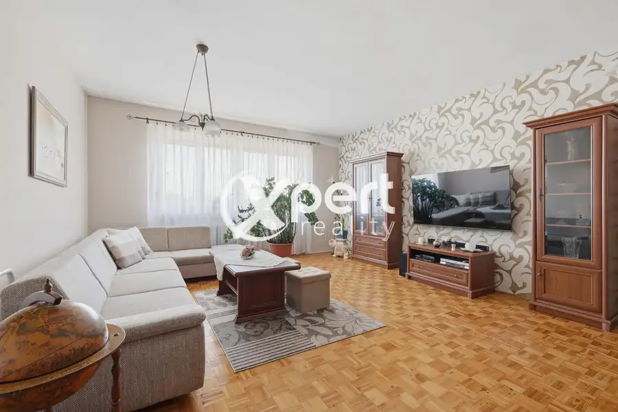
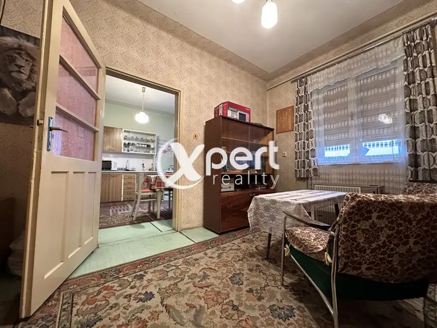
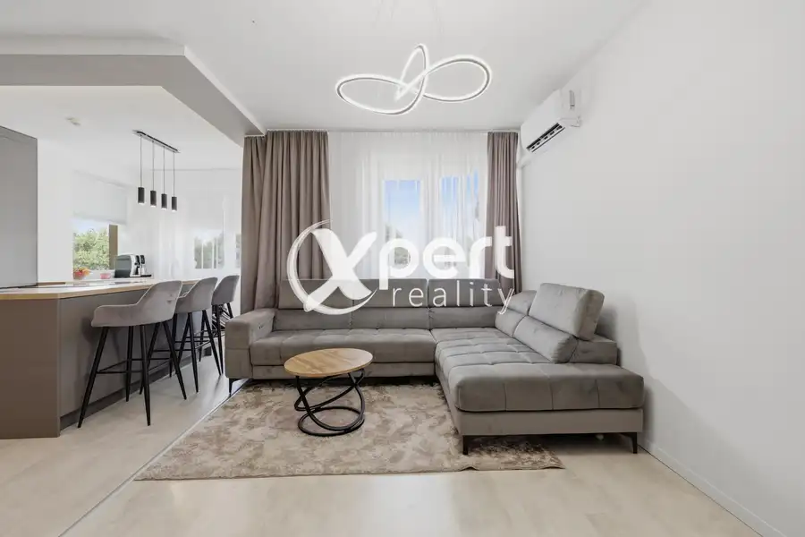

Dom,ktorý ponúka komfort novostavby bez starostí s výstavbou
Tomášikovo
- Plocha100 m²
- StavNovostavba
- VlastníctvoOsobné
O nehnuteľnosti
Dom, ktorý ponúka komfort novostavby bez starostí s výstavbou.Predstavujeme vám výnimočný 4-izbový rodinný dom v obci Tomášikovo. Vďaka kvalitnému prevedeniu, moderným technológiám a premyslenej dispozícii ponúka bývanie porovnateľné s novostavbou.Stačí si už len vybrať kuchynskú linku podľa vlastného vkusu a vytvoriť si domov presne podľa svojich predstáv.Základné informácie: Pozemok: 500 m² Zastavaná plocha: 122 m² Tehlový dom Kompletné zateplenie Plastové okná s trojsklom Elektrické podlahové kúrenie Samostatné termostaty v každej izbe Predpríprava na klimatizáciu Predpríprava na alarm Pochôdzna povalaDispozícia:vstupná halapriestranná obývacia izba prepojená s kuchyňousamostatné izbydve kúpeľnedve toaletytechnická miestnosťterasaVýhody: kvalitné materiály dve kompletne dokončené kúpeľne nové podlahy nové interiérové dvere nová fasáda upravené okolie oplotenie nízke prevádzkové náklady bez ďalších veľkých investíciíLokalita:Tomášikovo patrí medzi obľúbené obce na bývanie. Ponúka pokojné prostredie, kompletnú občiansku vybavenosť a výbornú dostupnosť do okolitých miest.Cena nehnuteľnosti: 189 000 €Pokiaľ Vás ponuka oslovila neváhajte ma kontaktovať na nemeth@xpertreality.sk , alebo na+ 421 911 044 850Cena ponúkanej nehnuteľnosti zahŕňa:- vypracovanie potrebnej zmluvnej dokumentácie a realizáciu celej transakcie- poplatok za návrh na vklad do katastra nehnuteľností- poplatky za overenie podpisov u notára- doručenie podkladov na kataster- asistenciu pri odovzdaní nehnuteľnosti a prehlásení energií a služieb- ďalšiu potrebnú asistenciu podľa dohody a potrebyRealitná kancelária - Xpert Reality Vám zabezpečí kompletný servis pri kúpe nehnuteľností. Prostredníctvom nášho hypotekárneho špecialistu Vám zabezpečíme najvýhodnejšie financovanie nehnuteľnosti. Vďaka externej spolupráci s právnou kanceláriou ako aj internému právnikovi Vám garantujeme nadštandardný právny servis. Zabezpečíme kompletný servis pri kúpe nehnuteľností.Tešíme sa na Vás,
Parametre
| Druh | Rodinný dom |
|---|---|
| Dátum zverejnenia | 13. 7. 2026 |
| Energie | 120 |
| Plocha pozemku | 500 m² |
| Počet izieb / miestností | 3 |
| Rok poslednej rekonštrukcie | 2026 |
| Stav nehnuteľnosti | Novostavba |
| Telekomunikácie | Optická sieť |
| Terén pozemku | Rovinatý |
| Typ | Predaj |
| Typ konštrukcie | Tehlová |
| Vlastníctvo | Osobné |
| Vybavenie | Terasa |
| Vykurovanie | Podlahové |
| Zariadenie | Čiastočne zariadené |
| Zastavaná plocha | 122 m² |
| Úžitková plocha | 100 m² |
Kde to je


Mohlo by Vás zaujímať

DomNové10 228 000 €Rodinný dom s mnohými benefitmi na predaj Čierny Brod 174.4 m² Rodinný dom na predaj v obci Čierny Brod – pokojné bývanie s výbornou dostupnosťouHľadáte bývanie, ktoré spája pokoj vidieka s rýchlou dostupnosťou…
DomNové10 120 000 €Nová cena.Na predaj rodinný dom v obci Topoľnica Topoľnica 117.1 m² Dom je vo výbornej kondícii, stojí na pevných základoch. Je ihneď voľný a pripravený na bývanie.Dom bol donedávna využívaný a obývaný to z neho robí…
BytNové10 179 800 €Na predaj Krásny 3-izbový byt v centre Galanty s garážou Galanta 3-izbový70 m² Slnečný 3-izbový byt v centre Galanty s garážovým státím – pripravený na okamžité bývanieHľadáte bývanie, do ktorého sa môžete ihneď nasťahovať bez…